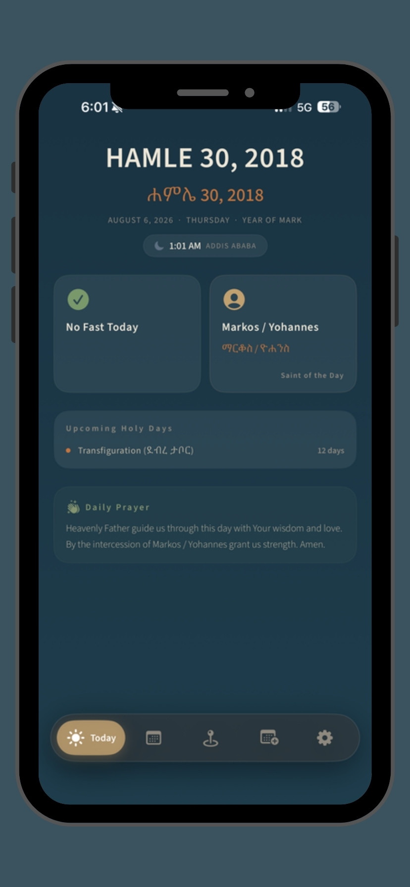
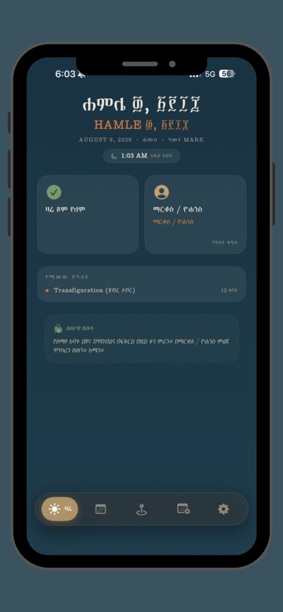
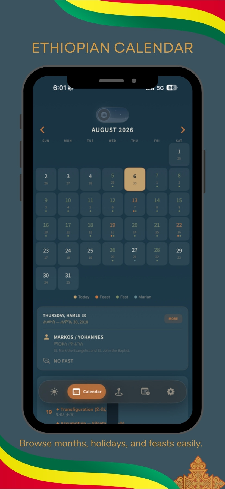
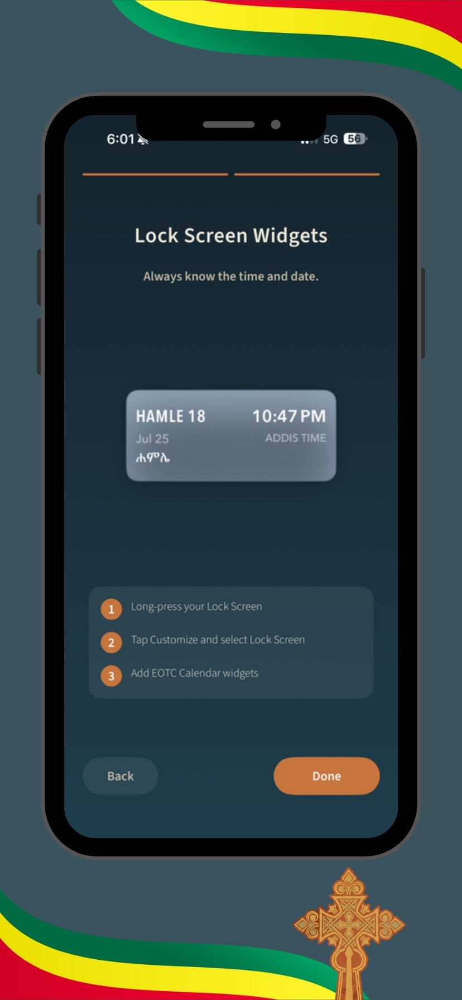
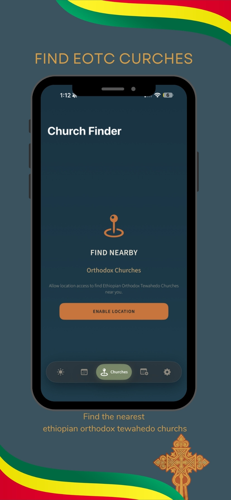
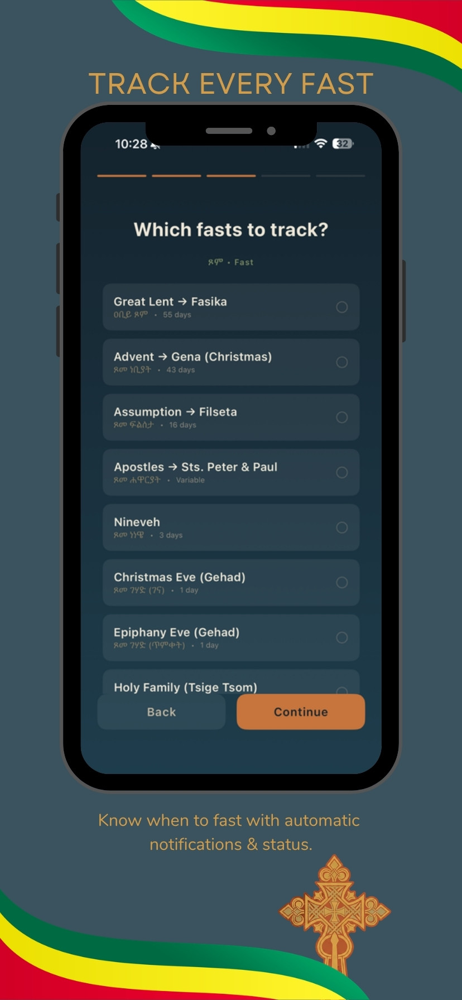
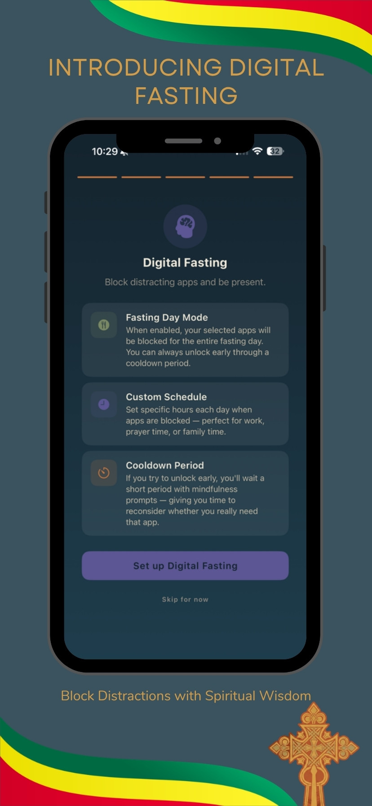
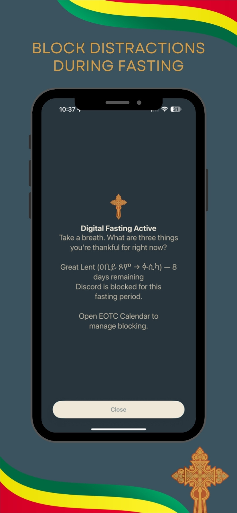
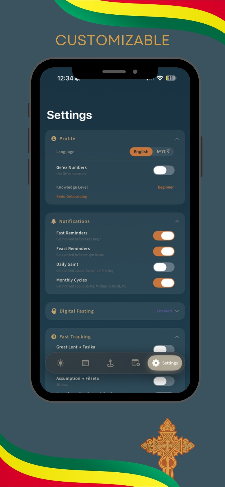

The church calendar, every day
EOTC Calendar is a complete digital liturgical calendar for the Ethiopian Orthodox Tewahedo Church. It tells you what fast you are in, which saint the day belongs to, and what is coming — with reminders that arrive on time, widgets on your Lock Screen, and a full Amharic interface alongside English.
-
01
The Ethiopian calendar
Browse months, holidays, and feasts easily. Every day is marked as a feast, a fast, or a Marian commemoration, with the saint of the day and a daily prayer.
-
02
English and አማርኛ
Switch the entire interface between English and Amharic, and turn on Ge'ez numerals when you want dates written the traditional way.
-
03
Track every fast
Great Lent, Advent to Gena, Assumption to Filseta, the Apostles' Fast, Nineveh, and the Gehad eves — each one tracked with automatic notifications and live status.
-
04
Monthly commemorations
Follow the monthly cycle of saints — Lideta Mariam, Abba Gubs, Ba'eta Mariam, Yohannes, Petros wa Pawlos and the rest — and choose which ones remind you.
-
05
Church finder
Find the nearest Ethiopian Orthodox Tewahedo churches around you, wherever you happen to be.
-
06
Lock and Home Screen widgets
Always know the date and what the day holds, without opening the app.
-
07
Digital Fasting
Fast from more than food. Block distracting apps for the whole fasting day or on a schedule that fits work, prayer, and family time.
-
08
A cooldown, not a wall
Try to unlock early and you get a short pause with a mindfulness prompt — time to reconsider whether you really need that app right now.
See it running








